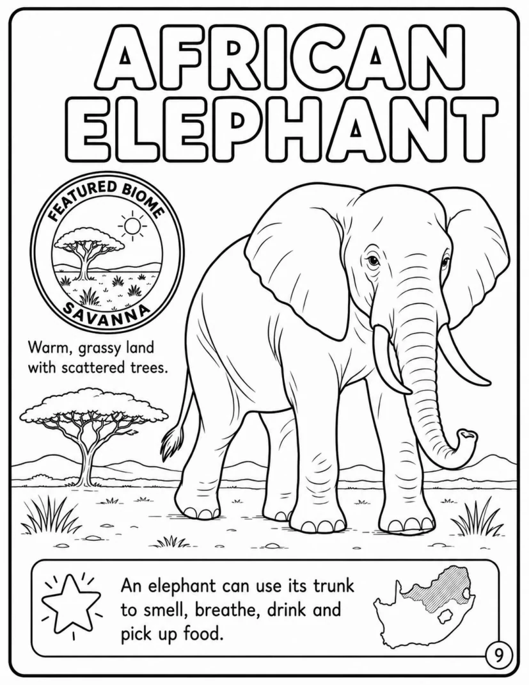
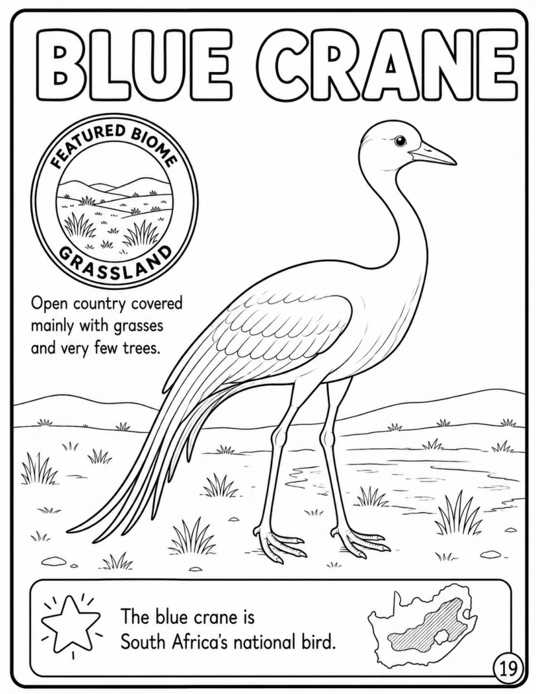
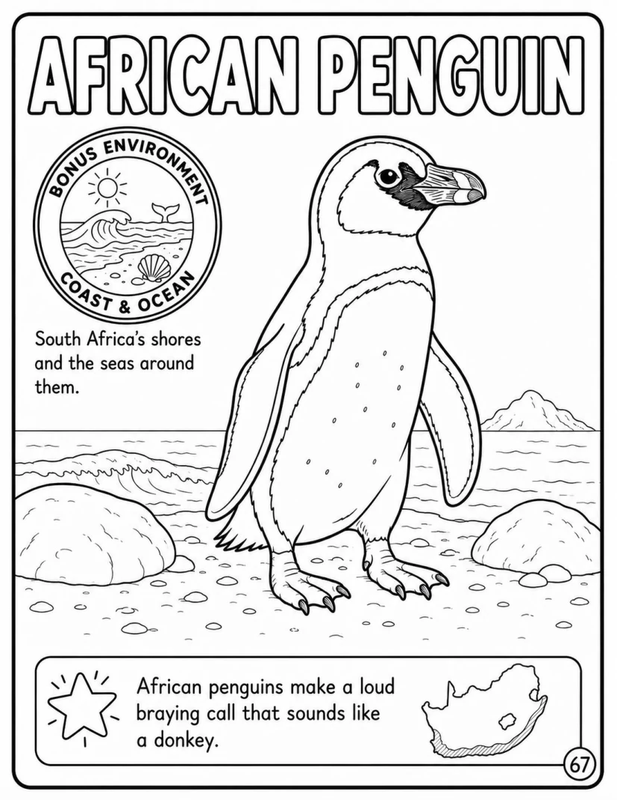
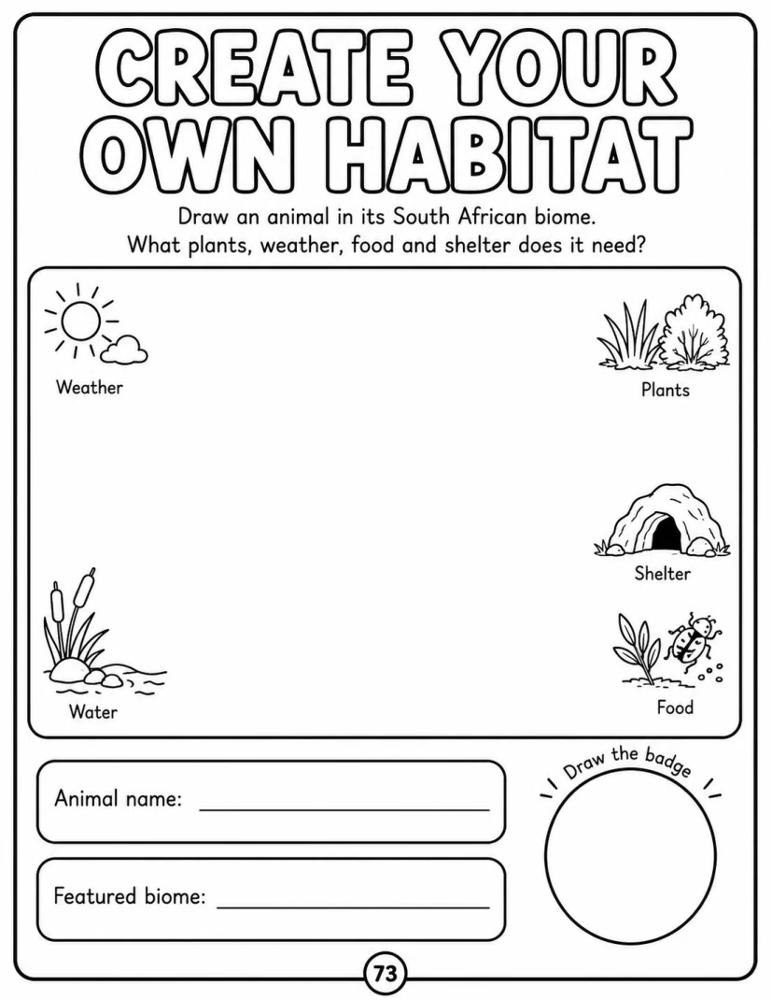
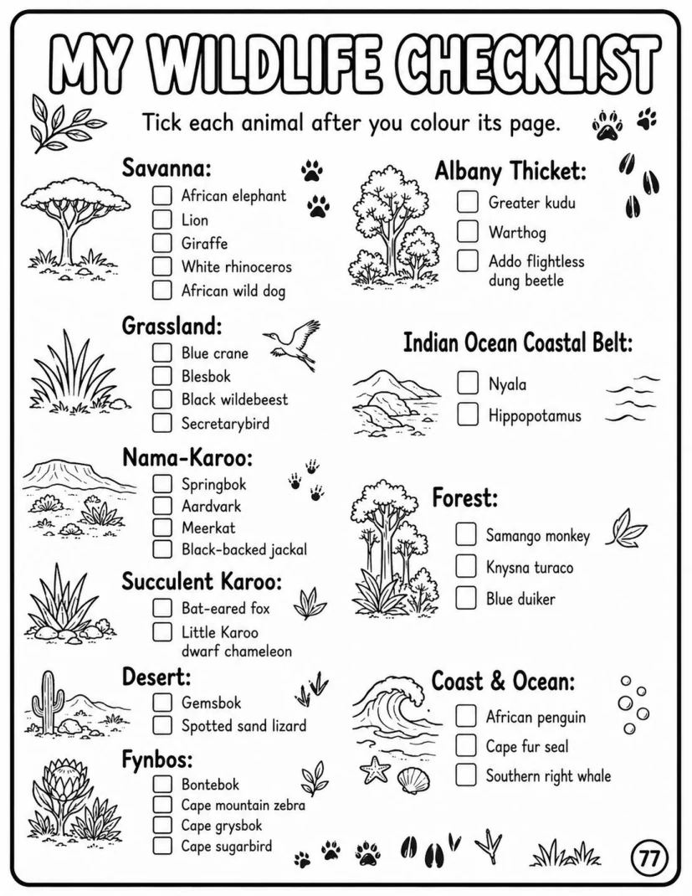

1
South African wildlife
From elephants and springbok to penguins and whales.
A Colouring Adventure introducing young explorers to South Africa’s wildlife and natural environments.

Each animal page combines line art with a biome badge, habitat description, mini-map and child-friendly fact.
From elephants and springbok to penguins and whales.
Visual clues connect animals to the environments they inhabit.
Habitat design, certificate, checklist and biome badge pages.





Yes. A paperback edition is planned with one-sided activity pages and blank reverse pages.
A printable digital edition is planned for families and educators.
The Veni Kids homepage will carry launch links and future companion resources.
Paperback, printable PDF and sample links will be added before publication.
Return to Veni Kids